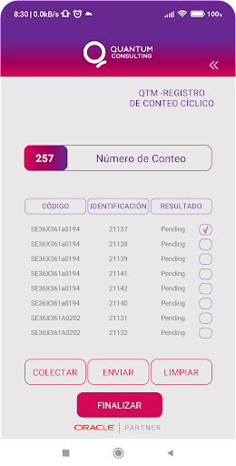
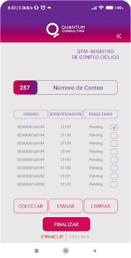

My jobs
On this site, you can find various applications — from tools for approving orders integrated with the Orchestrator, to apps that use internal databases (SQLite), QR code scanning, and integration with handheld devices for barcode reading.
For the development of these apps, I have mainly used Java along with libraries such as Retrofit2 and HTTP. In addition, I developed my first app published on the App Store using Flutter and the Dart language.
I began my career as a junior consultant, participating in small developments, and later transitioned into the Mobile Development area.
I also take part in the development of new objects, standard modifications, localizations, and Plug & Play solutions, as well as in implementations, migrations, upgrades, and customization of migrated objects. I have experience in problem analysis, documentation, and function modifications (NER and C), API, and BI Publisher.
I have worked with technical and functional teams distributed across different countries. I am certified in Scrum Foundations and Project Management (Initiation and Planning).
I also have experience as a consultant in management systems and have participated in various international projects. I work as a web and desktop application developer, as well as an instructor of SQL from basic to intermediate levels.
I completed a Java Full Stack certification, which allows me to work on both the back-end and front-end. I have also participated in several JD Edwards upgrade projects for different clients and versions.
Purchase Order Approval
App for approval of requirements and purchase orders, Where Purchase Orders Can Be Approved or Rejected pending that your company has.
- DART
The current application was developed using FLUTTER to ensure its adaptability on both platforms, App Store and Play Store. Integrates with REST API services, enabling efficient authentication through an Edwards JDE orchestration. This allows us to handle data in JSON format that are presented in the user interface, offering a faster and more comfortable experience directly from the mobile apps. This implementation eliminates the need to rely on a computer to carry out these actions, providing greater agility and accessibility.


Direct Selling
The application, developed on the versatile Dart framework to ensure its availability on multiple platforms, focuses on offering a robust set of targeted functionalities mainly to the management of financial transactions and the administration of clients. Among its main capabilities is the possibility of placing sales orders, Record collections and keep customer data up to date. These features are critical for users and businesses looking for an end-to-end solution for your financial and customer management needs. The application is distinguished by its efficient integration with multiple REST APIs, which allow access to a wide range of relevant information, such as tax identification numbers (CUIT), transaction statements and order details. This approach provides users with a seamless and seamless experience. by having access to up-to-date data quickly and securely. In addition, the use of Provider, an efficient solution for storage, has been implemented and offline data management. This strategic choice doesn't just optimize application performance by reducing reliance on online connections, but also simplifying the process of accessing information, resulting in a more streamlined and seamless user experience. With these features, the app is positioned as a reliable tool and complete, ideal for users looking to manage their financial operations efficiently and securely, and for businesses that want to deliver a robust banking experience to their customers, with the ability to query and manage pending orders and collections intuitively and efficiently.
- DART


Cycle Counting
Android app that facilitates physical inventory counting offline using a mobile device with a barcode reader or a handheld. Once the count is complete, the collected data is sent to JDE's AIS server for entry into the corresponding workforce.
- JAVA
- XML
The current application is developed in Java and integrates with REST API services. Facilitates efficient authentication using JDE Edwards orchestration. Use OkHttp to manage HTTP communications, Retrofit to consume RESTful web services efficiently, and SQLITE to store data locally in Android apps, thus allowing the use of the application offline. This application, along with Logistics Processes and Batch Retention, has been designed for the use of employees who have access to pallets and JDE Edwards. It allows users to quickly load pallet information, whether using a mobile phone or a handheld device, efficiently even without an internet connection. This translates to a significant reduction in workload, eliminating the need to manually note all pallets and then spend time loading them onto a computer later.


 

Logistics Processes
A platform was developed at JDE to manage the control of collected pallets through a mobile app. The platform's interface allows you to record the logistics movements of pallets, including customs entries, exits, returns, and inter-plant deliveries. This system provides full pallet traceability. All movements are subject to a control process that validates the consistency between the information collected and the transactions uploaded to JDE.
- JAVA
- XML


MAINTENANCE APPROVAL
Focused on the change of status regarding work orders. Displays a grid with all work orders generated by the requester awaiting approval, allowing the approval or rejection of each displayed order.
- DART
.png)
.png)

.png)
.png)
Clients

About me
I am a passionate mobile application developer with over three years of experience at Quantum Consulting, focusing on both online and offline environments integrated with the AIS server of the Oracle JD Edwards EO system. I am involved in the development of: • New objects such as standard modifications, localizations, and Plug and Play components. • Implementations. • Migrations and upgrades. • Customization of migrated objects. • Problem analysis and documentation. • Modification of functions (NER and C), APIs, BI, etc. I have experience working with different technical and functional teams located in various countries. I am certified in Scrum Foundations, Project Initiation, and Project Planning. I have experience in management systems, working as a consultant and participating in multiple projects across different countries. I have also developed interactive applications and taught SQL from basic to intermediate levels. I have knowledge and studies in system development for web and desktop environments, and in various technologies. I completed a Java Full Stack certification, which allows me to work on both the back-end and front-end sides of development. I have participated in several upgrade projects for different clients and JD Edwards versions. During this time, I have worked on a wide range of projects— from applications for order approval integrated with the Orchestrator, to apps using internal databases (SQLite) integrated with handheld devices for barcode reading and QR code scanning. For these applications, I mainly used Java and various frameworks, employing Retrofit and OkHttp for efficient handling of HTTP requests. I also took on and successfully met the challenge of launching my first app on the App Store (iOS), where I used Flutter and the Dart language for development, demonstrating adaptability and strong technical skills. I successfully supervised a cross-functional team composed of a front-end developer and a graphic designer, leading the execution of key projects. My responsibilities included not only managing daily tasks, but also fostering a collaborative environment where the developer and designer could maximize their skills and creativity. As a professional goal, I aim to advance toward the role of Senior Mobile Developer, aspiring to fully master multiple platforms and specialize in Java, Flutter, and Swift. I am committed to continuous growth, learning, and refinement of my technical abilities to contribute meaningfully to the development of innovative and high-quality applications.
Resume